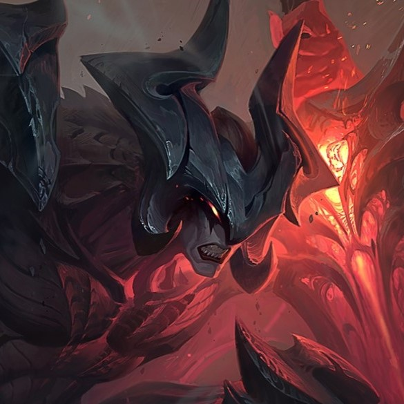
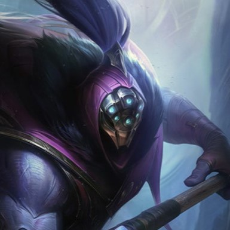
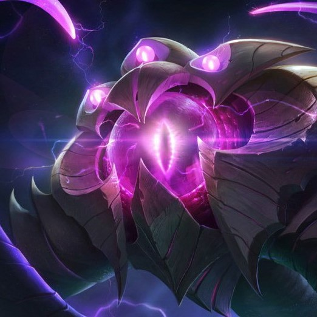

CHAMPIONS LIÉS

Aatrox

Jax

Velkoz
Aatrox
Jax
Velkoz
« La tristesse la plus grande est celle qui accompagne les pertes à venir. »
Autrefois membre du conseil d'Icathia, Zilean est un prodigieux mage élémentaire qui cherche à maîtriser le temps lui-même. Après avoir utilisé ses pouvoirs pour tenter de sauver son peuple du Néant, il dérive à travers le passé, le présent et l'avenir, influant sur l'écoulement du temps autour de lui. Zilean a tout vu, depuis la création mystérieuse de Runeterra jusqu'à sa fin apparemment inévitable, et il recherche le moindre fil du destin capable d'empêcher la destruction de sa terre natale.
Lire l'histoireZILEAN
GARDIEN DU TEMPS
Icathia n'a pas toujours été la plus désolée des terres maudites. C'était autrefois une riche civilisation, gouvernée par le bienveillant Axamuk, le dernier des Mages royaux antiques. Avec l'expansion continentale de Shurima, les appels à la coexistence pacifique d'Axamuk furent ignorés et ses armées furent détruites par les dieux-guerriers de l'Ost des Transfigurés.
Malgré la défaite, de nombreux habitants d'Icathia y virent une occasion d'avancement. Acceptant l'offre de devenir une satrapie autonome, ils installèrent un conseil de mages, de philosophes et de juristes pour préparer le passage vers un nouveau gouvernement.
Après presque neuf siècles de domination impériale, un jeune homme du nom de Zilean rejoignit les rangs du conseil. C'était un mage élémentaire doté d'une prodigieuse connaissance de la réalité physique. Il avait étudié avec les plus puissants esprits de son temps, des grands Yun d'Ixtal aux astromanciens de Faraj, en passant par bien d'autres encore.
Il y avait un élément du royaume matériel que peu comprenaient, mais que Zilean avait bien l'intention de maîtriser.
Le temps.
Le temps était une constante à laquelle on n'échappait jamais. Même les puissants dieux-guerriers n'étaient pas immunisés contre son passage… bien qu'on les adulât plus que n'importe qui dans la culture shurimienne.
Membre de l'élite politique, Zilean voyait de plus en plus clairement le mécontentement des citoyens d'Icathia. Bien que leur terre eût donné les chefs les plus héroïques et les penseurs les plus révolutionnaires de l'empire, aucun n'avait encore été considéré comme digne de l'Ascension. Le conseil avait beau soumettre au lointain empereur une requête après l'autre, l'accès au Disque solaire lui était toujours fermé, sans explication. En dépit de tout ce qu'ils offraient, les Icathiens ne seraient jamais considérés comme des égaux.
Zilean lui-même était de plus en plus aigri, mais il s'inquiétait que ses pairs évoquent ouvertement la sécession. C'était avant tout un patriote, mais devant l'Ost des Transfigurés, une rébellion ne pouvait s'achever que par une catastrophe pour son peuple. Cherchant une solution diplomatique, il fut envoyé vers les territoires voisins de Kahleek, Kalduga et Ixtal. Il s'était fait de nombreux alliés au cours de sa vie, et il les supplia de soutenir Icathia.
À chaque fois, la réponse fut la même. Personne ne voulait défier Shurima. Si le peuple de Zilean voulait se rebeller, il le ferait seul.
En rentrant, Zilean fut choqué de voir que le conseil avait décidé de couronner un nouveau Mage royal. Avec surexcitation, ils décrivirent à leur plénipotentiaire le pouvoir ancien et interdit qu'ils venaient de découvrir, un pouvoir si grand qu'il garantissait la victoire d'Icathia.
C'était le pouvoir du Néant.
En regardant ces Icathiens qu'il savait sages et raisonnables, il ne vit pourtant que folie dans leurs yeux. Bien que cela lui déchirât le cœur, Zilean préférait que la révolution de sa ville soit écrasée plutôt que de voir une telle abomination déchaînée sur le monde.
Les pires peurs de Zilean se réalisèrent. Une fois libérées, au cours de la bataille, les créatures du Néant échappèrent aux mages qui essayaient de les contrôler et Icathia fut détruite.
Tandis que Zilean s'échappait de la capitale, il sentit le sol trembler. Les bâtiments s'effondrèrent. Des horreurs qui n'avaient leur place dans aucun monde surgirent des profondeurs, faisant fuir les citoyens terrifiés.
Ils n'avaient nulle part où s'échapper. Des centaines de milliers d'innocents moururent. De désespoir, Zilean encouragea tous ceux qu'il put à se réfugier dans sa tour, et il fit l'impossible.
Il arracha tout le bâtiment à l'écoulement du temps.
Tout son pouvoir épuisé, Zilean s'effondra sur le sol, avant de lever les yeux vers les silhouettes pétrifiées autour de lui. Le Néant s'était arrêté, mais seulement entre ces murs. Dehors, là où Icathia se tenait naguère, il n'y avait plus rien.
Zilean avait passé des décennies à essayer de comprendre les mystères du temps et de la causalité, et il semblait être le seul à pouvoir se déplacer à l'intérieur de l'anomalie qu'il avait créée. Oui, il avait sauvé ces gens. Mais il ne savait pas comment défaire ce qu'il avait fait pour les préserver. Via de profondes méditations et des outils ésotériques de sa propre conception, il commença à voir les fils du passé et du présent qui menaient à ce moment, et il apprit progressivement comment se déplacer le long de ces fils, à chercher un avenir où ses efforts avaient déjà porté leurs fruits…
C'est ainsi qu'il découvrit la véritable menace : la fin de tout. La destruction intégrale de Runeterra.
Désormais, Zilean existe partout, depuis toujours. Pourtant, il est trop conscient des conséquences pour essayer de changer le monde et d'influer sur les destinées des autres, au risque de déclencher des issues souvent plus dangereuses. Peut-être que s'il trouve le moyen de sauver son propre peuple, il pourra éviter le désastre ultime.
La seule question est : qu'acceptera-t-il de sacrifier pour cela ?